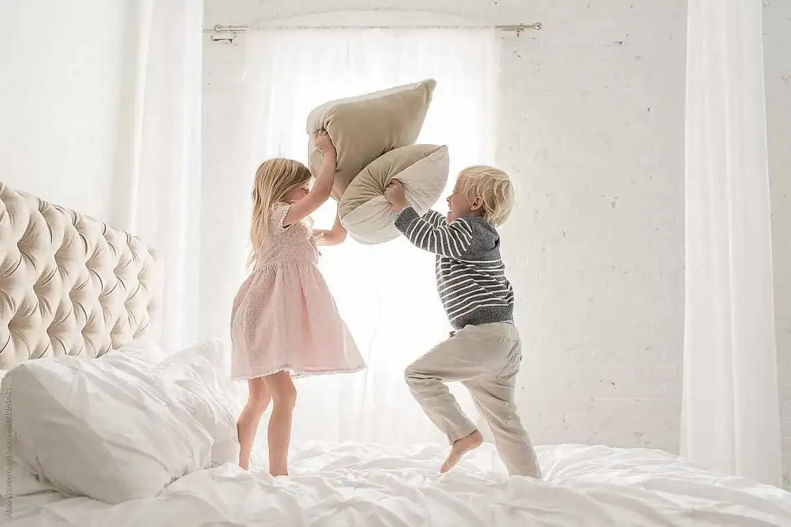
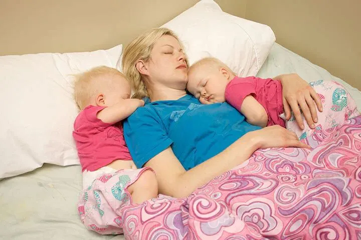

文|圆圈妈
网图|侵删
【帮主圆圈妈妈】：双胞胎小宝宝的睡眠问题，我们的公众号文章经常讨论到，这篇来探讨下双胞胎大孩子的睡眠问题，对于家有3岁以上的双胞胎父母而言，日夜颠倒或频繁夜醒已经是过去式了，现在进行时是如何让双胞胎按时上床睡觉。
在圆圈每晚睡觉之前，我总是会莫名地烦躁，一想到待会儿要赶两只小泼猴去睡觉，就感觉如临大敌。
虽然不用两手抱着哄着睡了，但现在遇到的问题并不会比小月龄那会儿轻松到哪里去，因为当我一声令下“赶紧睡觉”时，他们总是会有各种不睡觉的理由与我争辩，让人抓狂不已，比如，
语言上：“我还不想睡”，“我睡不着”，“还没到时间”，“睡觉太麻烦了”，“我还想再玩一会儿”...
动作上:虽然嘴上说马上去睡，可手上依然在摆弄着玩具；虽然已经关灯了，两人依然钻在被窝里窃窃私语；虽然已经乖乖躺好了，还是有很多借口从床上爬起来，比如忘记喝水了，忘记嘘嘘了，甚至忘记跟他心爱的轨道玩具说晚安了...
以上睡觉情形，他们从2岁半就开始了，一直持续到现在，随着年龄的增长，不睡觉的理由也是花样百出，让人防不胜防，恼火不已。
好想问，是不是双胞胎注定与睡神绝缘，永无挂钩之日？
原因
总结了下，大致有以下两个主要原因：
有样学样
我想，大概率是我们大人的生活习惯问题。
很多时候，我们总是下班很晚或者有熬夜的习惯，连我们都自己都觉得让孩子9点钟之前结束所有活动，如洗澡，吃饭，玩乐，洗漱…可能性不大，即便做到了，也很难坚持。
所以，通常都是10点，11点甚至12点才急急忙忙地张罗着让孩子们去睡觉，久而久之，孩子们就养成了晚睡的坏习惯。
这个原因搁我这，的确如此。
我和队友的工作基本上靠熬夜完成，每次圆圈躺床上看着我们还亮着灯在敲键盘，就噘嘴不肯睡了，当我们催促早点睡觉时，他们就反问：“为什么你们不早点睡啊？”
相互干扰
双胞胎睡觉时相互干扰，这个现象，似乎任何年龄阶段都存在。
小月龄时，一个醒了把另一个吵醒，现在大了，两人有伴儿一起玩，一起嗨，不觉得无聊了，更加不舍得早点睡了。
偏偏我还作死地给他们买了母子床。
也许是受小猪佩奇和乔治的影响（动画片中的两只猪姐弟是睡上下铺的），他们对这个上下床喜爱得不得了，玩过家家时，更加有代入感了，你来我往，上窜下跳，you jump I jump，玩得不亦乐乎，丝毫不顾我们的咆哮声。
我还以为这新鲜感过了会消停点，结果更坑的还在后头，两人经常为了争谁睡上床而争论不休，愣是从9点钟磨蹭到10点钟。
到最后，我还发现，他们为了不早点睡觉，吵架也愿意，吵着吵着两人又笑成一团，你让我，我让你！
果然，我还是too old too simple ，合着他们就是两戏精，剧目就是【为了不睡觉，双胞胎那些骚操作】
解决办法
还好，办法总比困难多，让双胞胎按时上床睡觉，思路还是有的，找到了原因，问题就很好解决了，关键看执行能力。
从自身做起
如果双胞胎晚睡原因主要是受大人的影响，那我们做父母的就要做出改变，调整自己的生活作息，以不影响孩子们的正常作息为前提。
我们不一定要与他们的作息同步，也不是说非要带着双胞胎一起睡觉，而是陪同他们一起按时完成睡觉前的所有准备工作，如洗漱后，讲绘本，读故事…
入园后，为了与幼儿园的作息同步，我们严格要求圆圈9点钟就要上床睡觉，一到点就把所有灯都关掉，所有人都停止一切活动，由队友带着他们哥俩睡，等睡着之后，队友再起来去书房敲代码。
这一招蛮管用的，前提是那个带睡的人要有“定海神针”级别的定力，可别俩娃还没睡，自己倒一觉睡到大清早了，像我这种一挨着床就能秒睡的人，是无法胜任这种高难度工作的。
态度坚决
发现了吗？许多小孩子嘴上应承着要去睡了，但却并没有真的去睡，总是在磨磨蹭蹭地做自己的事情。
而我们家长似乎也很满意孩子们“不争辩”的反应，并不介意他们是否马上行动，还很自信地觉得孩子们一定会自觉，于是，通常交代完后就去忙自己的事情了。
我觉得这不叫自信，而是态度不够坚决。
孩子们是可以从你的语气中感觉得到，你让他们睡觉这件事，是必须还是非必须，当你总是如此敷衍地说说而已，他们就更有底气一直磨蹭，挑战你的极限。
这就是为什么圆圈从2岁半开始到现在，晚睡陋习一直处于反反复复状态的主要原因。
我有时候的确是犯了这个错误，经常是嘴里催促着他们去睡觉，眼睛却盯着电脑，双手忙着码字。
他们很懂得察言观色，知道我哪种说话语气是认真的，于是就见机行事，跟我耍太极。
所以，想要严格落实双胞胎的固定睡觉时间，必须每次都要指令简单明确，态度坚决，语气强烈，立场坚定，让孩子们感受到一种不容拒绝的气场。
如果双胞胎孩子正处在一个很在乎你，只想取悦你的年龄，这一招，百试百灵！
分房分床
上文提到给双胞胎买子母床的事例表明：双胞胎自带群骚扰功能，两人同时存在一个时间和空间，本身就有很多机会相互干扰。
那么，我们就要人为地干预并减少这些诱因，把任何有可能会给双胞胎在睡眠上相互干扰制造机会的因素扼杀在摇篮中，给孩子们营造一个安静无干扰的睡眠环境，拒绝火上浇油。
建议从小睡在一起的双胞胎到了学龄前，应及早分房睡，各自独立，避免睡觉前两人再说什么悄悄话；如果做不到，那就分开两张床，避免互相抢被子，互踢，互打的现象。
如果被迫只能共享一张床，那就学我们这般，大人带着睡：大人睡中间，两娃各自一边，总之，避免他们睡前的过多接触，切断互相干扰的一切来源。
当然，这也是下下策，无奈之举。
温馨提示：如果双胞胎必须有大人带着才肯乖乖去睡，那只要一人即可，真心不建议那种宝妈带一个睡，婆婆带另一个睡的模式。
小月龄时尚且可以理解，对于已经2岁＋以上的双胞胎，要么孩子已经具备自主入睡，按时睡觉的能力，要么就由爸爸或妈妈陪同着睡，从而建立起自己的作息规律。
理由呢？
由婆婆带着另一个睡，大概率会出现一个问题：孩子会在老人家的逗弄下，越玩越嗨，更加不肯睡，此时的干扰不是来自双胞胎手足，而是来自一个无聊需有人陪玩解闷的老人家。
这相当于从一个坑掉入另一个坑，最后就是其中一个孩子依然晚睡了。
多点耐心，适当奖励
圆圈兄弟总体而言，是属于比较自律听话的孩子，基本上，只要我态度够坚决，语气够坚定，他们不会挣扎太久，就会一脸讨好地嬉皮笑脸，不好意思地看着我说晚安，然后就睡了。
如果是比较调皮倔强的双胞胎，或者是到了总是跟你对着干的可怕两岁，恐怖三岁的年龄，那要多一点耐心和适度的奖励了。
此时可参考《双胞胎睡眠圣经》一书中提到的奖励机制，效果还是很显著的，但我个人认为，不建议经常使用，免得沦为被孩子们日后用来“威胁”你的筹码。
只是说，当你开始着手调整双胞胎的规律作息，但无从下手，无计可施的情况下，可以稍微用来过渡下，当他们渐入佳境时，就要及时转变策略和态度，传达一个信息给他们：睡觉是自己的事情，按时睡觉是必须的。
任何事情都是万事开头难，刚开始的确会很挫败的，这不是一蹴而就的，培养双胞胎的规律睡眠时间，需要有养植物那种境界和情怀。
你用一种怎样的心态和心情去侍弄它，它就会以一种怎样的姿态回报你。
同理，你用一种怎样的耐心和宽容去培养双胞胎的健康作息，有一天，双胞胎孩子们也会以更加暖人的姿态温暖你，积极回应你爱的呼唤。
-END-
今日互动话题
#请问，你家双胞胎几点睡？#
评论区聊一聊呗！
微信公众号：孖仔帮
ID : twinsbang
专注双胞胎孕育，养育，教育经验分享
@www.sgguy.com
扫码关注我们
我知道你在看哟

